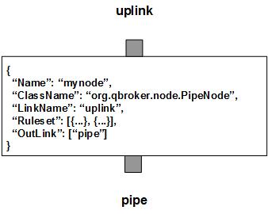

PipeNode is a message node that controls the throughput of the message flow. PipeNode picks up JMS messages from the input XQueue. By default, the cache is enabled. So PipeNode caches the incoming messages first. Then it dispatches them based on the priorities and thresholds for each of groups. There is only one outlink, pipe. All the groups share the same pipe with different priorities and thresholds.
PipeNode contains multiple rulesets that categorize the incoming messages into non-overlapped groups. Each group has its own priority for scheduling and threshold as the maximum number of active messages waiting for feedback. PipeNode also supports the dynamic threshold via the list of ActiveTime. By default, every message in the same group is unique. But if KeyTemplate is defined in the ruleset, messages with the same key are treated as identical. PipeNode will make sure only the first one of the identical messages will be scheduled. This way, PipeNode is able to control flow throughput on each group of messages. On the node level, DisplayMask and StringProperty control the display result of outgoing messages. StringProperty is also used to build the summary on each cached messages for display.
By default, PipeNode has the cache enabled. So all the overflown messages will be cached. Due to the scheduling process, the message affinity may get broken. However, if the cache is disabled, the message affinity will be guaranteed. In this case, the first overflown message will block until the required resource is available.
PipeNode always creates an extra ruleset, nohit, for those messages not hitting any pre-defined rulesets. It is always the first ruleset with the id of 0. For nohit, there is no flow control by default. It means that there is no caching and no scheduling either. However, if nohit is the only ruleset, and a nonzero Throughput is defined, and the cache is disabled as well, the thoughput of the nohit messages will be controlled not to exceed the pre-defined Throughput in a session. The duration of a session is defined via Heartbeat in second. Throughput is the number of the messages allowed to propagate within a session. The total number of propagated messages in the previous session is saved into RULE_PEND for nohit ruleset. Therefore, PipeNode can also be inserted into a message flow to monitor its throughput.
Apart from the common properties, there are two implementation specific properties for PipeNode.
| Property Name | Data Type | Requirement | Description | Examples |
|---|---|---|---|---|
| Heartbeat | integer | optional | interval in sec to dispatch or for a session | 120 (default: 60) |
| CacheEnabled | string of true or false | optional | flag to enable cache | false (default: true) |
| Throughput | integer | optional | max number of messages to propagate in a session | 2000 (default: 0) |
The flow control operation is executed via the pre-defined rulesets. Therefore, the configuration of the rulesets is critical to the operations of PipeNode. Here are complete properties of rulesets for PipeNode.
| Property Name | Data Type | Requirement | Description | Examples |
|---|---|---|---|---|
| Name | alphanumeric with no spaces | mandatory | name of the ruleset | event |
| Priority | integer | optional | priority of the rule to dispatch cached messages | 250 (default: 0) |
| Threshold | integer | optional | default threshold for the rule | 4 (default: 1) |
| ActiveTime | list | optional | list of time windows for thresholds | see example |
| KeyTemplate | string | optional | template for the unique key | ##AssetID## |
| KeySubstitution | string | optional | text subsctitution for the unique key | s/^0// |
| JMSPropertyGroup | list | optional | list of pattern groups on properties to select messages | see example |
| XJMSPropertyGroup | list | optional | list of pattern groups on properties to exclude messages | see example |
| PatternGroup | list | optional | list of pattern groups on body to select messages | see example |
| XPatternGroup | list | optional | list of pattern groups on body to exclude messages | see example |
| StringProperty | map | optional | for logging of message properties | see example |
Here is an example of the ruleset.
{
...
"Ruleset": [{
"Name": "proxy",
"JMSPropertyGroup": [{
"AssetID": "^\\d+$",
"Type": "^8$"
}],
"Priority": "250",
"Threshold": "24",
"KeyTemplate": "##AssetID##"
}],
...
}
where it has threshold of 24 for all days. It means only 24 messages of this
group can be outstanding in the queue.
Here is an example of PipeNode:
{
"Name": "node_pipe",
"ClassName": "org.qbroker.node.PipeNode",
"Operation": "pipe",
"LinkName": "queue",
"Capacity": "32",
"WaitTime": "50",
"DisplayMask": "0",
"Ruleset": [{
"Name": "proxy",
"JMSPropertyGroup": [{
"AssetID": "^\\d+$",
"Type": "^(1|8|650)$"
}],
"Threshold": "24"
},{
"Name": "hd2sd",
"JMSPropertyGroup": [{
"AssetID": "^\\d+$",
"Type": "^(20|21|100)$"
}],
"Threshold": "8",
"ActiveTime": [{
"WeekDay": ["1"],
"TimeWindow": [{
"Interval": "00:00:00-04:00:00$",
"Threshold": "8"
},{
"Interval": "04:00:00-24:00:00$",
"Threshold": "4"
}]
},{
"WeekDay": ["2", "3", "4", "5"],
"TimeWindow": [{
"Interval": "00:00:00-24:00:00$",
"Threshold": "4"
}]
},{
"WeekDay": ["6"],
"TimeWindow": [{
"Interval": "00:00:00-08:00:00$",
"Threshold": "4"
},{
"Interval": "08:00:00-24:00:00$",
"Threshold": "8"
}]
},{
"WeekDay": ["0"],
"TimeWindow": [{
"Interval": "00:00:00-24:00:00$",
"Threshold": "8"
}]
}]
}],
"OutLink": ["pipe"]
}
where there are two rulesets. The second rule defines the different thresholds
based on the week days and weekends.